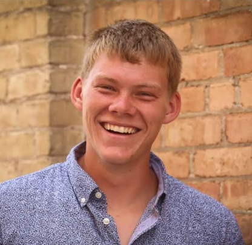

About Me

Education
University of Wisconsin Madison
B.S Cartography/GIS and Civil/Environmental Engineering
Relevent Projects
Senior capstone studying public recreational use of Lake Mendota.
Problem solve and design remediation solutions for a contamination site.
Created a topographic map using Civil 3D and my own surveyed data.
Experience
Soils and Engineering Services, Summer 2020
Gained broad experience by directly participating in about 30 geotechnical focused projects over the summer.
Performed concrete stress tests and soil property tests for more than 20 clients.
Observed and assisted in large drill rig operations, such as monitoring well installations, and discovered solutions for any problems that occurred.
Took a leadership role in a micropile installation project monitoring bedrock depth.
Worked alone or with a partner to collect data and samples that were needed for the project.
Hoofers Sailing Shop Staff, Summer 2019, Scow Fleet Captain
Maintained facilities and approximately 50 boats by troubleshooting problems.
Independently managed the operations of 4 large scow sailboats.
Assisted in designing solutions for implementing and improving a new dock system.
Experimental Aircraft Association Maintenance, Summer 2018
Completed grounds maintenance for an event attended by 600,000 people.
Solved maintenance related problems with a few people, gained teamwork skills.
Leadership and Involvement
Engineers Without Borders
Engineered all aspects of a solar energy system for an orphanage in Haiti by collaborating with fellow club members at weekly meetings.
Theta Tau Professional Engineering Fraternity
Participate in fraternity operations and workshops for professional development by meeting with members multiple times per week.
University of Wisconsin Sailing Team, Social chair
Practice 10-15 hours per week during the academic year as well as occasional weekend regattas.
Manage and plan team events to create a fun, inclusive environment for 50 team members.
Relevent Skills
ArcGIS, Adobe Illustrator, AutoCAD, Python, Map box, ArcGIS story maps, Microsoft Office suite, Civil 3D, 2D/3D graphics, Sketchup, MATlab, surveying.